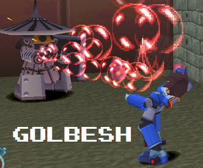

HP:
MML1: 640
MML2: 80 (B), 100 (A), 130 (S)
90 (B), 110 (A), 150 (S) [Ice]

Overview
Golbesh first appeared in the original Megaman Legends game, best described as the reaverbot counterpart to the Sniper
Joes of the Classic series. As such, these reaverbots remain mostly stationary and are seen holding rather large shields.
They come in two different color varieties (gold and silver), but their behavior remains the same. Their sole method of
attack is an arm cannon that shoots fireballs, and they only attack when provoked. These reaverbots are very cautious as
well, only opening fire when they know they have a clear shot. This is crucial as firing leaves them open to attack.
Come Megaman Legends 2, Golbesh recieved quite an overhaul. The sole reaverbot eye was replaced with two more human-like
eye-sockets, and they ditched their fireballs for something more akin to a flamethrower. This weapon came in three different
varieties; numbness, fire, and ice. This variation of Golbesh also has a more keen eye for defense. While the initial incarnation
would continue to fire even when shot, these reaverbots will put up their shields at the first sign of danger, only firing when
their opponent drops their weapon. It is also interesting to note that these Golbesh often travel in pairs of two, usually when
guarding a door. They also always drop health and weapon energy, great for when a quick recharge is needed.
Dealing With It
The MML1 variation of Golbesh can be tough to take down, as they are quite durable and you have wait out the shield multiple times.
If possible just jumping over them and taking the passive route is the most trouble-free way to deal with them, but if you must deal
with them (or just want some extra zenny), destroying a Golbesh isn't too hard. The key is to take your shots while dodging the
fireballs, and when they shield just wait it out as there's nothing you can do. Some Golbesh (like the ones in the Main Gate) will
walk forward a bit, but this isn't an issue as you can just keep your spacing in mind so you have time to dodge their fireballs.
Dealing with the MML2 Golbesh's are a lot more interesting. Because they mostly travel in pairs and guard doors, skipping them just
isn't an option. What's worse is that if they detect you they go nuts with the flamethower, making getting close a hassle. Their defensive
reflexes also make it tougher to get shots in.
Thankfully Legends 2 included several new methods for defeating these guys, one being the incredibly useful Lifter! If you can sneak up
to a Golbesh without it detecting you (the walk ability does wonders here), you can pop it with a buster shot, pick it up with the Lifter,
and chuck it at the adjacent reaver, assassin style! This kills both of them so that there's minimal hassle involved. Another option is
to use a piercing weapon like the Homing Missile, Buster Cannon, or Hyper Shell, and blow their shields right off. The Ground Crawler
doesn't blow their shield off, but the explosion is large enough that it outright ignores their defense.
These Golbesh also have a big defensive weak spot; the back of their heads. Should you land a hit back there, the Golbesh will immediately
fall over, and you can keep hitting the weak spot until it explodes. You can also try to be a hipster and hit the weak spot with the Reflector
Arm like you're shooting pool, but ehh...
Coming In for a Landing
Solid design, challenging to fight, definitely a great reaverbot all-around. It's pretty apparent that the MML1 version was going for a
Sniper Joe type of attack style, but it was really nice that they did a number to make the reaverbot a little more abstract & original in the
sequel. Golbesh gets a solid 9/10 overall!